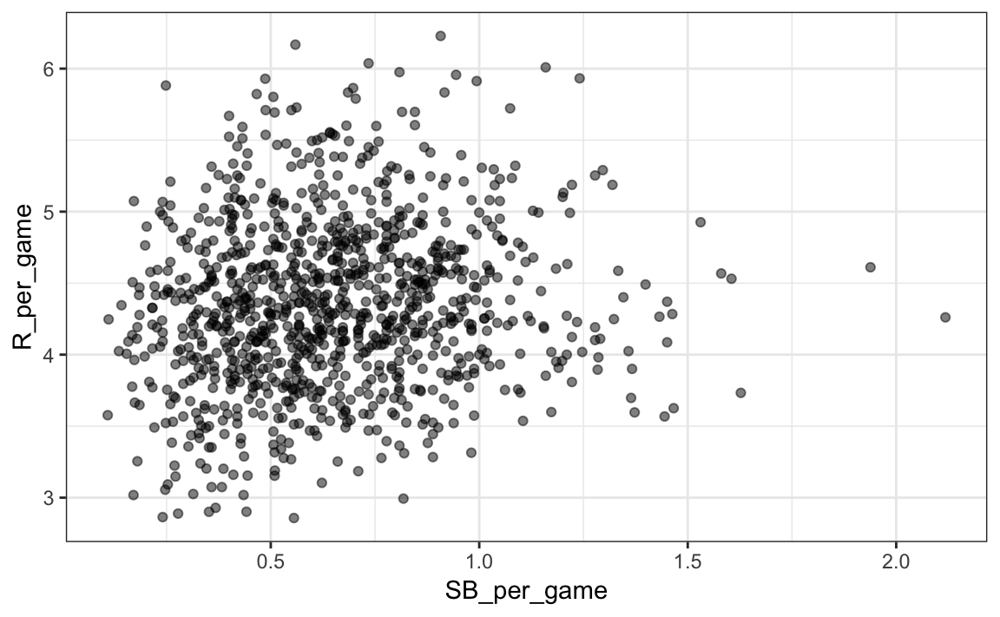
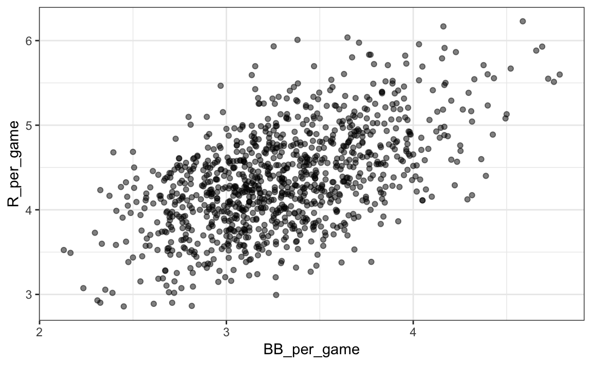
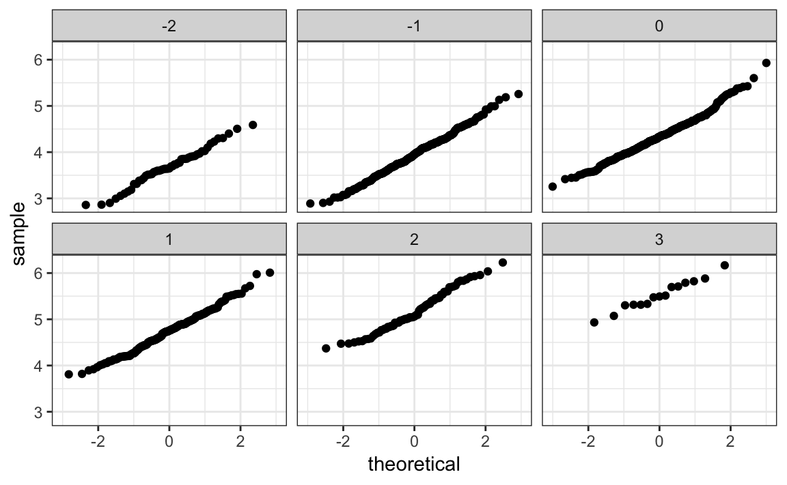
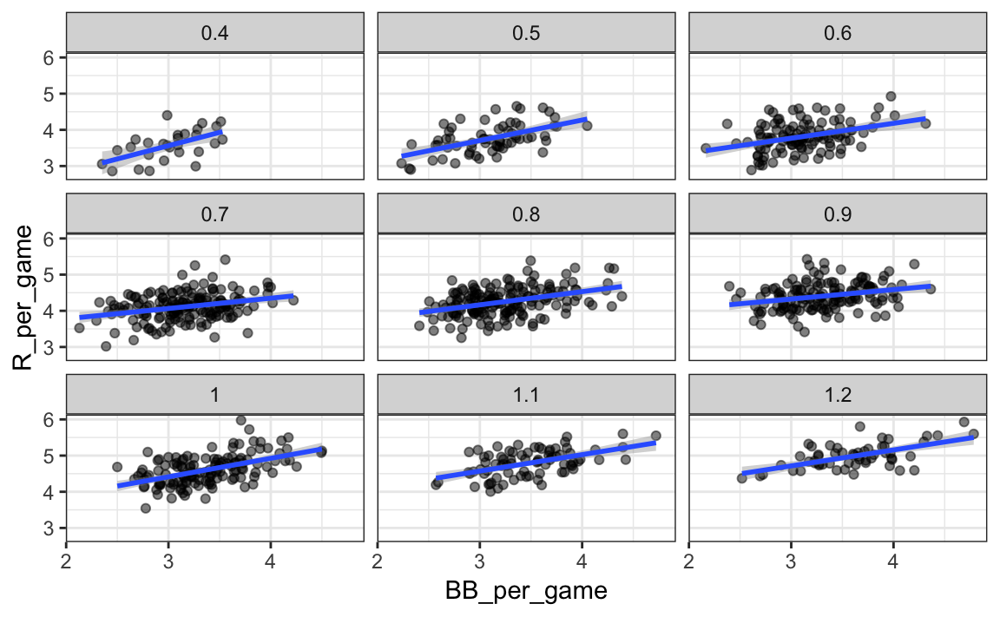
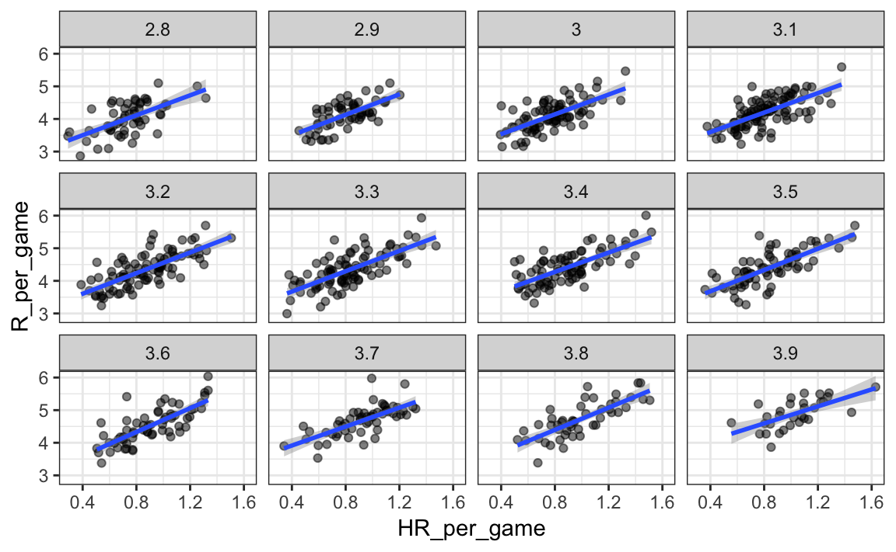
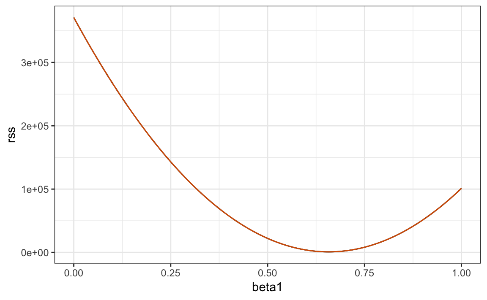
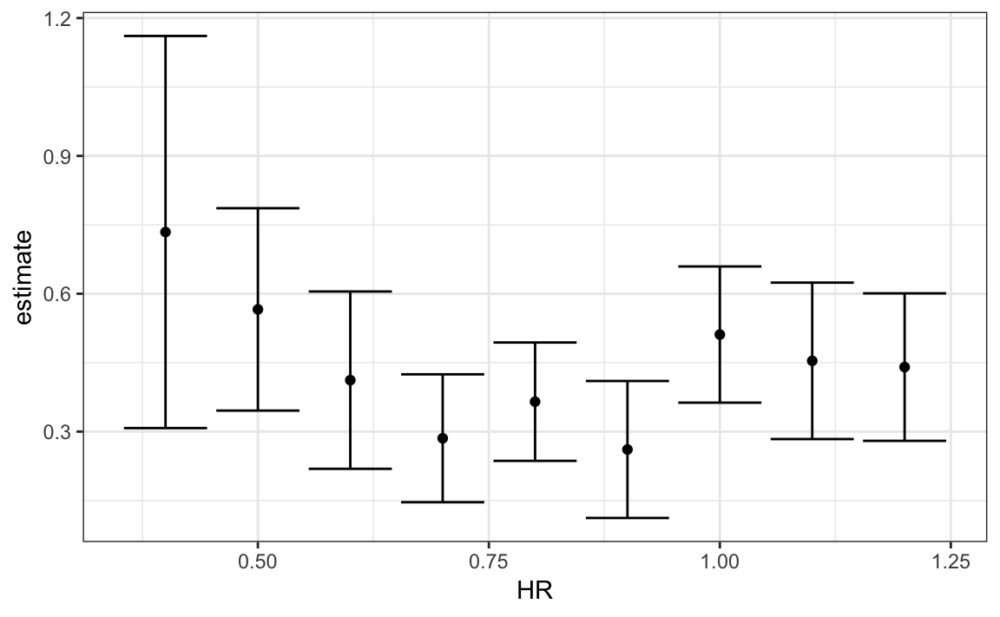
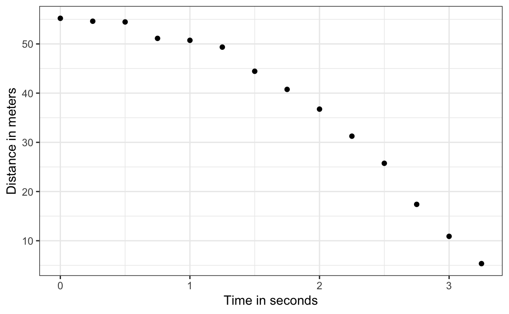
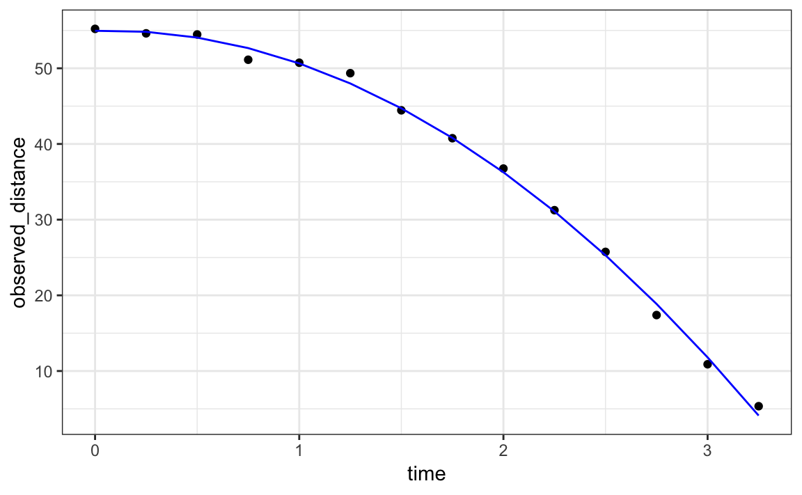

Chapter 18 Linear models
Since Galton’s original development, regression has become one of the most widely used tools in data science. One reason has to do with the fact that regression permits us to find relationships between two variables taking into account the effects of other variables that affect both. This has been particularly popular in fields where randomized experiments are hard to run, such as economics and epidemiology.
When we are not able to randomly assign each individual to a treatment or control group, confounding is particularly prevalent. For example, consider estimating the effect of eating fast foods on life expectancy using data collected from a random sample of people in a jurisdiction. Fast food consumers are more likely to be smokers, drinkers, and have lower incomes. Therefore, a naive regression model may lead to an overestimate of the negative health effect of fast food. So how do we account for confounding in practice? In this chapter we learn how linear models can help with such situations and can be used to describe how one or more variables affect an outcome variable.
18.1 Case study: Moneyball
Moneyball: The Art of Winning an Unfair Game is a book by Michael Lewis about the Oakland Athletics (A’s) baseball team and its general manager, the person tasked with building the team, Billy Beane.
Traditionally, baseball teams use scouts to help them decide what players to hire. These scouts evaluate players by observing them perform. Scouts tend to favor athletic players with observable physical abilities. For this reason, scouts tend to agree on who the best players are and, as a result, these players tend to be in high demand. This in turn drives up their salaries.
From 1989 to 1991, the A’s had one of the highest payrolls in baseball. They were able to buy the best players and, during that time, they were one of the best teams. However, in 1995 the A’s team owner changed and the new management cut the budget drastically, leaving then general manager, Sandy Alderson, with one of the lowest payrolls in baseball. He could no longer afford the most sought-after players. Alderson began using a statistical approach to find inefficiencies in the market. Alderson was a mentor to Billy Beane, who succeeded him in 1998 and fully embraced data science, as opposed to scouts, as a method for finding low-cost players that data predicted would help the team win. Today, this strategy has been adapted by most baseball teams. As we will see, regression plays a large role in this approach.
As motivation for this chapter, we will pretend it is 2002 and try to build a baseball team with a limited budget, just like the A’s had to do. To appreciate what you are up against, note that in 2002 the Yankees’ payroll of $125,928,583 more than tripled the Oakland A’s $39,679,746:
18.1.1 Sabermetics
Statistics have been used in baseball since its beginnings. The dataset we will be using, included in the Lahman library, goes back to the 19th century. For example, a summary statistics we will describe soon, the batting average, has been used for decades to summarize a batter’s success. Other statistics64 such as home runs (HR), runs batted in (RBI), and stolen bases (SB) are reported for each player in the game summaries included in the sports section of newspapers, with players rewarded for high numbers. Although summary statistics such as these were widely used in baseball, data analysis per se was not. These statistics were arbitrarily decided on without much thought as to whether they actually predicted anything or were related to helping a team win.
This changed with Bill James65. In the late 1970s, this aspiring writer and baseball fan started publishing articles describing more in-depth analysis of baseball data. He named the approach of using data to predict what outcomes best predicted if a team would win sabermetrics66. Until Billy Beane made sabermetrics the center of his baseball operation, Bill James’ work was mostly ignored by the baseball world. Currently, sabermetrics popularity is no longer limited to just baseball; other sports have started to use this approach as well.
In this chapter, to simplify the exercise, we will focus on scoring runs and ignore the two other important aspects of the game: pitching and fielding. We will see how regression analysis can help develop strategies to build a competitive baseball team with a constrained budget. The approach can be divided into two separate data analyses. In the first, we determine which recorded player-specific statistics predict runs. In the second, we examine if players were undervalued based on what our first analysis predicts.
18.1.2 Baseball basics
To see how regression will help us find undervalued players, we actually don’t need to understand all the details about the game of baseball, which has over 100 rules. Here, we distill the sport to the basic knowledge one needs to know how to effectively attack the data science problem.
The goal of a baseball game is to score more runs (points) than the other team. Each team has 9 batters that have an opportunity to hit a ball with a bat in a predetermined order. After the 9th batter has had their turn, the first batter bats again, then the second, and so on. Each time a batter has an opportunity to bat, we call it a plate appearance (PA). At each PA, the other team’s pitcher throws the ball and the batter tries to hit it. The PA ends with an binary outcome: the batter either makes an out (failure) and returns to the bench or the batter doesn’t (success) and can run around the bases, and potentially score a run (reach all 4 bases). Each team gets nine tries, referred to as innings, to score runs and each inning ends after three outs (three failures).
Here is a video showing a success: https://www.youtube.com/watch?v=HL-XjMCPfio. And here is one showing a failure: https://www.youtube.com/watch?v=NeloljCx-1g. In these videos, we see how luck is involved in the process. When at bat, the batter wants to hit the ball hard. If the batter hits it hard enough, it is a HR, the best possible outcome as the batter gets at least one automatic run. But sometimes, due to chance, the batter hits the ball very hard and a defender catches it, resulting in an out. In contrast, sometimes the batter hits the ball softly, but it lands just in the right place. The fact that there is chance involved hints at why probability models will be involved.
Now there are several ways to succeed. Understanding this distinction will be important for our analysis. When the batter hits the ball, the batter wants to pass as many bases as possible. There are four bases with the fourth one called home plate. Home plate is where batters start by trying to hit, so the bases form a cycle.
(Courtesy of Cburnett67. CC BY-SA 3.0 license68.)
A batter who goes around the bases and arrives home, scores a run.
We are simplifying a bit, but there are five ways a batter can succeed, that is, not make an out:
- Bases on balls (BB) - the pitcher fails to throw the ball through a predefined area considered to be hittable (the strikezone), so the batter is permitted to go to first base.
- Single - Batter hits the ball and gets to first base.
- Double (2B) - Batter hits the ball and gets to second base.
- Triple (3B) - Batter hits the ball and gets to third base.
- Home Run (HR) - Batter hits the ball and goes all the way home and scores a run.
Here is an example of a HR: https://www.youtube.com/watch?v=xYxSZJ9GZ-w. If a batter gets to a base, the batter still has a chance of getting home and scoring a run if the next batter hits successfully. While the batter is on base, the batter can also try to steal a base (SB). If a batter runs fast enough, the batter can try to go from one base to the next without the other team tagging the runner. [Here] is an example of a stolen base: https://www.youtube.com/watch?v=JSE5kfxkzfk.
All these events are kept track of during the season and are available to us through the Lahman package. Now we will start discussing how data analysis can help us decide how to use these statistics to evaluate players.
18.1.3 No awards for BB
Historically, the batting average has been considered the most important offensive statistic. To define this average, we define a hit (H) and an at bat (AB). Singles, doubles, triples, and home runs are hits. The fifth way to be successful, BB, is not a hit. An AB is the number of times you either get a hit or make an out; BBs are excluded. The batting average is simply H/AB and is considered the main measure of a success rate. Today this success rate ranges from 20% to 38%. We refer to the batting average in thousands so, for example, if your success rate is 28%, we call it batting 280.
(Picture courtesy of Keith Allison69. CC BY-SA 2.0 license70.)
One of Bill James’ first important insights is that the batting average ignores BB, but a BB is a success. He proposed we use the on base percentage (OBP) instead of batting average. He defined OBP as (H+BB)/(AB+BB) which is simply the proportion of plate appearances that don’t result in an out, a very intuitive measure. He noted that a player that gets many more BB than the average player might not be recognized if the batter does not excel in batting average. But is this player not helping produce runs? No award is given to the player with the most BB. However, bad habits are hard to break and baseball did not immediately adopt OBP as an important statistic. In contrast, total stolen bases were considered important and an award71 given to the player with the most. But players with high totals of SB also made more outs as they did not always succeed. Does a player with high SB total help produce runs? Can we use data science to determine if it’s better to pay for players with high BB or SB?
18.1.4 Base on balls or stolen bases?
One of the challenges in this analysis is that it is not obvious how to determine if a player produces runs because so much depends on his teammates. We do keep track of the number of runs scored by a player. However, remember that if a player X bats right before someone who hits many HRs, batter X will score many runs. But these runs don’t necessarily happen if we hire player X but not his HR hitting teammate. However, we can examine team-level statistics. How do teams with many SB compare to teams with few? How about BB? We have data! Let’s examine some.
Let’s start with an obvious one: HRs. Do teams that hit more home runs score more runs? We examine data from 1961 to 2001. The visualization of choice when exploring the relationship between two variables, such as HRs and wins, is a scatterplot:
library(Lahman)
Teams %>% filter(yearID %in% 1961:2001) %>%
mutate(HR_per_game = HR / G, R_per_game = R / G) %>%
ggplot(aes(HR_per_game, R_per_game)) +
geom_point(alpha = 0.5)
The plot shows a strong association: teams with more HRs tend to score more runs. Now let’s examine the relationship between stolen bases and runs:
Teams %>% filter(yearID %in% 1961:2001) %>%
mutate(SB_per_game = SB / G, R_per_game = R / G) %>%
ggplot(aes(SB_per_game, R_per_game)) +
geom_point(alpha = 0.5)
Here the relationship is not as clear. Finally, let’s examine the relationship between BB and runs:
Teams %>% filter(yearID %in% 1961:2001) %>%
mutate(BB_per_game = BB/G, R_per_game = R/G) %>%
ggplot(aes(BB_per_game, R_per_game)) +
geom_point(alpha = 0.5)
Here again we see a clear association. But does this mean that increasing a team’s BBs causes an increase in runs? One of the most important lessons you learn in this book is that association is not causation.
In fact, it looks like BBs and HRs are also associated:
Teams %>% filter(yearID %in% 1961:2001 ) %>%
mutate(HR_per_game = HR/G, BB_per_game = BB/G) %>%
ggplot(aes(HR_per_game, BB_per_game)) +
geom_point(alpha = 0.5)We know that HRs cause runs because, as the name “home run” implies, when a player hits a HR they are guaranteed at least one run. Could it be that HRs also cause BB and this makes it appear as if BB cause runs? When this happens we say there is confounding, an important concept we will learn more about throughout this chapter.
Linear regression will help us parse all this out and quantify the associations. This will then help us determine what players to recruit. Specifically, we will try to predict things like how many more runs will a team score if we increase the number of BBs, but keep the HRs fixed? Regression will help us answer questions like this one.
18.1.5 Regression applied to baseball statistics
Can we use regression with these data? First, notice that the HR and Run data appear to be bivariate normal. We save the plot into the object p as we will use it again later.
library(Lahman)
p <- Teams %>% filter(yearID %in% 1961:2001 ) %>%
mutate(HR_per_game = HR/G, R_per_game = R/G) %>%
ggplot(aes(HR_per_game, R_per_game)) +
geom_point(alpha = 0.5)
pThe qq-plots confirm that the normal approximation is useful here:
Teams %>% filter(yearID %in% 1961:2001 ) %>%
mutate(z_HR = round((HR - mean(HR))/sd(HR)),
R_per_game = R/G) %>%
filter(z_HR %in% -2:3) %>%
ggplot() +
stat_qq(aes(sample=R_per_game)) +
facet_wrap(~z_HR) 
Now we are ready to use linear regression to predict the number of runs a team will score if we know how many home runs the team hits. All we need to do is compute the five summary statistics:
summary_stats <- Teams %>%
filter(yearID %in% 1961:2001 ) %>%
mutate(HR_per_game = HR/G, R_per_game = R/G) %>%
summarize(avg_HR = mean(HR_per_game),
s_HR = sd(HR_per_game),
avg_R = mean(R_per_game),
s_R = sd(R_per_game),
r = cor(HR_per_game, R_per_game))
summary_stats
#> avg_HR s_HR avg_R s_R r
#> 1 0.855 0.243 4.36 0.589 0.762and use the formulas given above to create the regression lines:
reg_line <- summary_stats %>% summarize(slope = r*s_R/s_HR,
intercept = avg_R - slope*avg_HR)
p + geom_abline(intercept = reg_line$intercept, slope = reg_line$slope)Soon we will learn R functions, such as lm, that make fitting regression lines much easier. Another example is the ggplot2 function geom_smooth which computes and adds a regression line to plot along with confidence intervals, which we also learn about later. We use the argument method = "lm" which stands for linear model, the title of an upcoming section. So we can simplify the code above like this:
In the example above, the slope is 1.845. So this tells us that teams that hit 1 more HR per game than the average team, score 1.845 more runs per game than the average team. Given that the most common final score is a difference of a run, this can certainly lead to a large increase in wins. Not surprisingly, HR hitters are very expensive. Because we are working on a budget, we will need to find some other way to increase wins. So in the next section we move our attention to BB.
18.2 Confounding
Previously, we noted a strong relationship between Runs and BB. If we find the regression line for predicting runs from bases on balls, we a get slope of:
library(tidyverse)
library(Lahman)
get_slope <- function(x, y) cor(x, y) * sd(y) / sd(x)
bb_slope <- Teams %>%
filter(yearID %in% 1961:2001 ) %>%
mutate(BB_per_game = BB/G, R_per_game = R/G) %>%
summarize(slope = get_slope(BB_per_game, R_per_game))
bb_slope
#> slope
#> 1 0.735So does this mean that if we go and hire low salary players with many BB, and who therefore increase the number of walks per game by 2, our team will score 1.5 more runs per game?
We are again reminded that association is not causation. The data does provide strong evidence that a team with two more BB per game than the average team, scores 1.5 runs per game. But this does not mean that BB are the cause.
Note that if we compute the regression line slope for singles we get:
singles_slope <- Teams %>%
filter(yearID %in% 1961:2001 ) %>%
mutate(Singles_per_game = (H-HR-X2B-X3B)/G, R_per_game = R/G) %>%
summarize(slope = get_slope(Singles_per_game, R_per_game))
singles_slope
#> slope
#> 1 0.449which is a lower value than what we obtain for BB.
Also, notice that a single gets you to first base just like a BB. Those that know about baseball will tell you that with a single, runners on base have a better chance of scoring than with a BB. So how can BB be more predictive of runs? The reason this happen is because of confounding. Here we show the correlation between HR, BB, and singles:
Teams %>%
filter(yearID %in% 1961:2001 ) %>%
mutate(Singles = (H-HR-X2B-X3B)/G, BB = BB/G, HR = HR/G) %>%
summarize(cor(BB, HR), cor(Singles, HR), cor(BB, Singles))
#> cor(BB, HR) cor(Singles, HR) cor(BB, Singles)
#> 1 0.404 -0.174 -0.056It turns out that pitchers, afraid of HRs, will sometimes avoid throwing strikes to HR hitters. As a result, HR hitters tend to have more BBs and a team with many HRs will also have more BBs. Although it may appear that BBs cause runs, it is actually the HRs that cause most of these runs. We say that BBs are confounded with HRs. Nonetheless, could it be that BBs still help? To find out, we somehow have to adjust for the HR effect. Regression can help with this as well.
18.2.1 Understanding confounding through stratification
A first approach is to keep HRs fixed at a certain value and then examine the relationship between BB and runs. As we did when we stratified fathers by rounding to the closest inch, here we can stratify HR per game to the closest ten. We filter out the strata with few points to avoid highly variable estimates:
dat <- Teams %>% filter(yearID %in% 1961:2001) %>%
mutate(HR_strata = round(HR/G, 1),
BB_per_game = BB / G,
R_per_game = R / G) %>%
filter(HR_strata >= 0.4 & HR_strata <=1.2) and then make a scatterplot for each strata:
dat %>%
ggplot(aes(BB_per_game, R_per_game)) +
geom_point(alpha = 0.5) +
geom_smooth(method = "lm") +
facet_wrap( ~ HR_strata)
#> `geom_smooth()` using formula 'y ~ x'
Remember that the regression slope for predicting runs with BB was 0.7. Once we stratify by HR, these slopes are substantially reduced:
dat %>%
group_by(HR_strata) %>%
summarize(slope = get_slope(BB_per_game, R_per_game))
#> `summarise()` ungrouping output (override with `.groups` argument)
#> # A tibble: 9 x 2
#> HR_strata slope
#> <dbl> <dbl>
#> 1 0.4 0.734
#> 2 0.5 0.566
#> 3 0.6 0.412
#> 4 0.7 0.285
#> 5 0.8 0.365
#> # … with 4 more rowsThe slopes are reduced, but they are not 0, which indicates that BBs are helpful for producing runs, just not as much as previously thought. In fact, the values above are closer to the slope we obtained from singles, 0.45, which is more consistent with our intuition. Since both singles and BB get us to first base, they should have about the same predictive power.
Although our understanding of the application tells us that HR cause BB but not the other way around, we can still check if stratifying by BB makes the effect of BB go down. To do this, we use the same code except that we swap HR and BBs to get this plot:
#> `geom_smooth()` using formula 'y ~ x'
In this case, the slopes do not change much from the original:
dat %>% group_by(BB_strata) %>%
summarize(slope = get_slope(HR_per_game, R_per_game))
#> `summarise()` ungrouping output (override with `.groups` argument)
#> # A tibble: 12 x 2
#> BB_strata slope
#> <dbl> <dbl>
#> 1 2.8 1.52
#> 2 2.9 1.57
#> 3 3 1.52
#> 4 3.1 1.49
#> 5 3.2 1.58
#> # … with 7 more rowsThey are reduced a bit, which is consistent with the fact that BB do in fact cause some runs.
hr_slope <- Teams %>%
filter(yearID %in% 1961:2001 ) %>%
mutate(HR_per_game = HR/G, R_per_game = R/G) %>%
summarize(slope = get_slope(HR_per_game, R_per_game))
hr_slope
#> slope
#> 1 1.84Regardless, it seems that if we stratify by HR, we have bivariate distributions for runs versus BB. Similarly, if we stratify by BB, we have approximate bivariate normal distributions for HR versus runs.
18.2.2 Multivariate regression
It is somewhat complex to be computing regression lines for each strata. We are essentially fitting models like this:
\[ \mbox{E}[R \mid BB = x_1, \, HR = x_2] = \beta_0 + \beta_1(x_2) x_1 + \beta_2(x_1) x_2 \]
with the slopes for \(x_1\) changing for different values of \(x_2\) and vice versa. But is there an easier approach?
If we take random variability into account, the slopes in the strata don’t appear to change much. If these slopes are in fact the same, this implies that \(\beta_1(x_2)\) and \(\beta_2(x_1)\) are constants. This in turn implies that the expectation of runs conditioned on HR and BB can be written like this:
\[ \mbox{E}[R \mid BB = x_1, \, HR = x_2] = \beta_0 + \beta_1 x_1 + \beta_2 x_2 \]
This model suggests that if the number of HR is fixed at \(x_2\), we observe a linear relationship between runs and BB with an intercept of \(\beta_0 + \beta_2 x_2\). Our exploratory data analysis suggested this. The model also suggests that as the number of HR grows, the intercept growth is linear as well and determined by \(\beta_1 x_1\).
In this analysis, referred to as multivariate regression, you will often hear people say that the BB slope \(\beta_1\) is adjusted for the HR effect. If the model is correct then confounding has been accounted for. But how do we estimate \(\beta_1\) and \(\beta_2\) from the data? For this, we learn about linear models and least squares estimates.
18.3 Least squares estimates
We have described how if data is bivariate normal then the conditional expectations follow the regression line. The fact that the conditional expectation is a line is not an extra assumption but rather a derived result. However, in practice it is common to explicitly write down a model that describes the relationship between two or more variables using a linear model.
We note that “linear” here does not refer to lines exclusively, but rather to the fact that the conditional expectation is a linear combination of known quantities. In mathematics, when we multiply each variable by a constant and then add them together, we say we formed a linear combination of the variables. For example, \(3x - 4y + 5z\) is a linear combination of \(x\), \(y\), and \(z\). We can also add a constant so \(2 + 3x - 4y + 5z\) is also linear combination of \(x\), \(y\), and \(z\).
So \(\beta_0 + \beta_1 x_1 + \beta_2 x_2\), is a linear combination of \(x_1\) and \(x_2\). The simplest linear model is a constant \(\beta_0\); the second simplest is a line \(\beta_0 + \beta_1 x\). If we were to specify a linear model for Galton’s data, we would denote the \(N\) observed father heights with \(x_1, \dots, x_n\), then we model the \(N\) son heights we are trying to predict with:
\[ Y_i = \beta_0 + \beta_1 x_i + \varepsilon_i, \, i=1,\dots,N. \]
Here \(x_i\) is the father’s height, which is fixed (not random) due to the conditioning, and \(Y_i\) is the random son’s height that we want to predict. We further assume that \(\varepsilon_i\) are independent from each other, have expected value 0 and the standard deviation, call it \(\sigma\), does not depend on \(i\).
In the above model, we know the \(x_i\), but to have a useful model for prediction, we need \(\beta_0\) and \(\beta_1\). We estimate these from the data. Once we do this, we can predict son’s heights for any father’s height \(x\). We show how to do this in the next section.
Note that if we further assume that the \(\varepsilon\) is normally distributed, then this model is exactly the same one we derived earlier by assuming bivariate normal data. A somewhat nuanced difference is that in the first approach we assumed the data was bivariate normal and that the linear model was derived, not assumed. In practice, linear models are just assumed without necessarily assuming normality: the distribution of the \(\varepsilon\)s is not specified. Nevertheless, if your data is bivariate normal, the above linear model holds. If your data is not bivariate normal, then you will need to have other ways of justifying the model.
18.3.1 Interpreting linear models
One reason linear models are popular is that they are interpretable. In the case of Galton’s data, we can interpret the data like this: due to inherited genes, the son’s height prediction grows by \(\beta_1\) for each inch we increase the father’s height \(x\). Because not all sons with fathers of height \(x\) are of equal height, we need the term \(\varepsilon\), which explains the remaining variability. This remaining variability includes the mother’s genetic effect, environmental factors, and other biological randomness.
Given how we wrote the model above, the intercept \(\beta_0\) is not very interpretable as it is the predicted height of a son with a father with no height. Due to regression to the mean, the prediction will usually be a bit larger than 0. To make the slope parameter more interpretable, we can rewrite the model slightly as:
\[ Y_i = \beta_0 + \beta_1 (x_i - \bar{x}) + \varepsilon_i, \, i=1,\dots,N \]
with \(\bar{x} = 1/N \sum_{i=1}^N x_i\) the average of the \(x\). In this case \(\beta_0\) represents the height when \(x_i = \bar{x}\), which is the height of the son of an average father.
18.3.2 Least Squares Estimates (LSE)
For linear models to be useful, we have to estimate the unknown \(\beta\)s. The standard approach in science is to find the values that minimize the distance of the fitted model to the data. The following is called the least squares (LS) equation and we will see it often in this chapter. For Galton’s data, we would write:
\[ RSS = \sum_{i=1}^n \left\{ y_i - \left(\beta_0 + \beta_1 x_i \right)\right\}^2 \]
This quantity is called the residual sum of squares (RSS). Once we find the values that minimize the RSS, we will call the values the least squares estimates (LSE) and denote them with \(\hat{\beta}_0\) and \(\hat{\beta}_1\). Let’s demonstrate this with the previously defined dataset:
library(HistData)
data("GaltonFamilies")
set.seed(1983)
galton_heights <- GaltonFamilies %>%
filter(gender == "male") %>%
group_by(family) %>%
sample_n(1) %>%
ungroup() %>%
select(father, childHeight) %>%
rename(son = childHeight)Let’s write a function that computes the RSS for any pair of values \(\beta_0\) and \(\beta_1\).
rss <- function(beta0, beta1, data){
resid <- galton_heights$son - (beta0+beta1*galton_heights$father)
return(sum(resid^2))
}So for any pair of values, we get an RSS. Here is a plot of the RSS as a function of \(\beta_1\) when we keep the \(\beta_0\) fixed at 25.
beta1 = seq(0, 1, len=nrow(galton_heights))
results <- data.frame(beta1 = beta1,
rss = sapply(beta1, rss, beta0 = 25))
results %>% ggplot(aes(beta1, rss)) + geom_line() +
geom_line(aes(beta1, rss))
We can see a clear minimum for \(\beta_1\) at around 0.65. However, this minimum for \(\beta_1\) is for when \(\beta_0 = 25\), a value we arbitrarily picked. We don’t know if (25, 0.65) is the pair that minimizes the equation across all possible pairs.
Trial and error is not going to work in this case. We could search for a minimum within a fine grid of \(\beta_0\) and \(\beta_1\) values, but this is unnecessarily time-consuming since we can use calculus: take the partial derivatives, set them to 0 and solve for \(\beta_1\) and \(\beta_2\). Of course, if we have many parameters, these equations can get rather complex. But there are functions in R that do these calculations for us. We will learn these next. To learn the mathematics behind this, you can consult a book on linear models.
18.3.3 The lm function
In R, we can obtain the least squares estimates using the lm function. To fit the model:
\[ Y_i = \beta_0 + \beta_1 x_i + \varepsilon_i \]
with \(Y_i\) the son’s height and \(x_i\) the father’s height, we can use this code to obtain the least squares estimates.
The most common way we use lm is by using the character ~ to let lm know which is the variable we are predicting (left of ~) and which we are using to predict (right of ~). The intercept is added automatically to the model that will be fit.
The object fit includes more information about the fit. We can use the function summary to extract more of this information (not shown):
summary(fit)
#>
#> Call:
#> lm(formula = son ~ father, data = galton_heights)
#>
#> Residuals:
#> Min 1Q Median 3Q Max
#> -9.354 -1.566 -0.008 1.726 9.415
#>
#> Coefficients:
#> Estimate Std. Error t value Pr(>|t|)
#> (Intercept) 37.2876 4.9862 7.48 3.4e-12 ***
#> father 0.4614 0.0721 6.40 1.4e-09 ***
#> ---
#> Signif. codes: 0 '***' 0.001 '**' 0.01 '*' 0.05 '.' 0.1 ' ' 1
#>
#> Residual standard error: 2.45 on 177 degrees of freedom
#> Multiple R-squared: 0.188, Adjusted R-squared: 0.183
#> F-statistic: 40.9 on 1 and 177 DF, p-value: 1.36e-09To understand some of the information included in this summary we need to remember that the LSE are random variables. Mathematical statistics gives us some ideas of the distribution of these random variables
18.3.4 LSE are random variables
The LSE is derived from the data \(y_1,\dots,y_N\), which are a realization of random variables \(Y_1, \dots, Y_N\). This implies that our estimates are random variables. To see this, we can run a Monte Carlo simulation in which we assume the son and father height data defines a population, take a random sample of size \(N=50\), and compute the regression slope coefficient for each one:
B <- 1000
N <- 50
lse <- replicate(B, {
sample_n(galton_heights, N, replace = TRUE) %>%
lm(son ~ father, data = .) %>%
.$coef
})
lse <- data.frame(beta_0 = lse[1,], beta_1 = lse[2,]) We can see the variability of the estimates by plotting their distributions:
The reason these look normal is because the central limit theorem applies here as well: for large enough \(N\), the least squares estimates will be approximately normal with expected value \(\beta_0\) and \(\beta_1\), respectively. The standard errors are a bit complicated to compute, but mathematical theory does allow us to compute them and they are included in the summary provided by the lm function. Here it is for one of our simulated data sets:
sample_n(galton_heights, N, replace = TRUE) %>%
lm(son ~ father, data = .) %>%
summary %>% .$coef
#> Estimate Std. Error t value Pr(>|t|)
#> (Intercept) 19.28 11.656 1.65 1.05e-01
#> father 0.72 0.169 4.25 9.79e-05You can see that the standard errors estimates reported by the summary are close to the standard errors from the simulation:
The summary function also reports t-statistics (t value) and p-values (Pr(>|t|)). The t-statistic is not actually based on the central limit theorem but rather on the assumption that the \(\varepsilon\)s follow a normal distribution. Under this assumption, mathematical theory tells us that the LSE divided by their standard error, \(\hat{\beta}_0 / \hat{\mbox{SE}}(\hat{\beta}_0 )\) and \(\hat{\beta}_1 / \hat{\mbox{SE}}(\hat{\beta}_1 )\), follow a t-distribution with \(N-p\) degrees of freedom, with \(p\) the number of parameters in our model. In the case of height \(p=2\), the two p-values are testing the null hypothesis that \(\beta_0 = 0\) and \(\beta_1=0\), respectively.
Remember that, as we described in Section 16.10 for large enough \(N\), the CLT works and the t-distribution becomes almost the same as the normal distribution. Also, notice that we can construct confidence intervals, but we will soon learn about broom, an add-on package that makes this easy.
Although we do not show examples in this book, hypothesis testing with regression models is commonly used in epidemiology and economics to make statements such as “the effect of A on B was statistically significant after adjusting for X, Y, and Z”. However, several assumptions have to hold for these statements to be true.
18.3.5 Predicted values are random variables
Once we fit our model, we can obtain prediction of \(Y\) by plugging in the estimates into the regression model. For example, if the father’s height is \(x\), then our prediction \(\hat{Y}\) for the son’s height will be:
\[\hat{Y} = \hat{\beta}_0 + \hat{\beta}_1 x\]
When we plot \(\hat{Y}\) versus \(x\), we see the regression line.
Keep in mind that the prediction \(\hat{Y}\) is also a random variable and mathematical theory tells us what the standard errors are. If we assume the errors are normal, or have a large enough sample size, we can use theory to construct confidence intervals as well. In fact, the ggplot2 layer geom_smooth(method = "lm") that we previously used plots \(\hat{Y}\) and surrounds it by confidence intervals:
galton_heights %>% ggplot(aes(son, father)) +
geom_point() +
geom_smooth(method = "lm")
#> `geom_smooth()` using formula 'y ~ x'The R function predict takes an lm object as input and returns the prediction. If requested, the standard errors and other information from which we can construct confidence intervals is provided:
18.4 Exercises
We have shown how BB and singles have similar predictive power for scoring runs. Another way to compare the usefulness of these baseball metrics is by assessing how stable they are across the years. Since we have to pick players based on their previous performances, we will prefer metrics that are more stable. In these exercises, we will compare the stability of singles and BBs.
1. Before we get started, we want to generate two tables. One for 2002 and another for the average of 1999-2001 seasons. We want to define per plate appearance statistics. Here is how we create the 2017 table. Keeping only players with more than 100 plate appearances.
library(Lahman)
dat <- Batting %>% filter(yearID == 2002) %>%
mutate(pa = AB + BB,
singles = (H - X2B - X3B - HR) / pa, bb = BB / pa) %>%
filter(pa >= 100) %>%
select(playerID, singles, bb)Now compute a similar table but with rates computed over 1999-2001.
2. In Section 22.1 we learn about the inner_join, which you can use to have the 2001 data and averages in the same table:
Compute the correlation between 2002 and the previous seasons for singles and BB.
3. Note that the correlation is higher for BB. To quickly get an idea of the uncertainty associated with this correlation estimate, we will fit a linear model and compute confidence intervals for the slope coefficient. However, first make scatterplots to confirm that fitting a linear model is appropriate.
4. Now fit a linear model for each metric and use the confint function to compare the estimates.
18.5 Linear regression in the tidyverse
To see how we use the lm function in a more complex analysis, let’s go back to the baseball example. In a previous example, we estimated regression lines to predict runs for BB in different HR strata. We first constructed a data frame similar to this:
dat <- Teams %>% filter(yearID %in% 1961:2001) %>%
mutate(HR = round(HR/G, 1),
BB = BB/G,
R = R/G) %>%
select(HR, BB, R) %>%
filter(HR >= 0.4 & HR<=1.2) Since we didn’t know the lm function, to compute the regression line in each strata, we used the formula directly like this:
get_slope <- function(x, y) cor(x, y) * sd(y) / sd(x)
dat %>%
group_by(HR) %>%
summarize(slope = get_slope(BB, R))We argued that the slopes are similar and that the differences were perhaps due to random variation. To provide a more rigorous defense of the slopes being the same, which led to our multivariate model, we could compute confidence intervals for each slope. We have not learned the formula for this, but the lm function provides enough information to construct them.
First, note that if we try to use the lm function to get the estimated slope like this:
we don’t get the result we want. The lm function ignores the group_by. This is expected because lm is not part of the tidyverse and does not know how to handle the outcome of a grouped tibble.
The tidyverse functions know how to interpret grouped tibbles. Furthermore, to facilitate stringing commands through the pipe %>%, tidyverse functions consistently return data frames, since this assures that the output of a function is accepted as the input of another.
But most R functions do not recognize grouped tibbles nor do they return data frames. The lm function is an example. The do functions serves as a bridge between R functions, such as lm, and the tidyverse. The do function understands grouped tibbles and always returns a data frame.
So, let’s try to use the do function to fit a regression line to each HR strata:
dat %>%
group_by(HR) %>%
do(fit = lm(R ~ BB, data = .))
#> # A tibble: 9 x 2
#> # Rowwise:
#> HR fit
#> <dbl> <list>
#> 1 0.4 <lm>
#> 2 0.5 <lm>
#> 3 0.6 <lm>
#> 4 0.7 <lm>
#> 5 0.8 <lm>
#> # … with 4 more rowsNotice that we did in fact fit a regression line to each strata. The do function will create a data frame with the first column being the strata value and a column named fit (we chose the name, but it can be anything). The column will contain the result of the lm call. Therefore, the returned tibble has a column with lm objects, which is not very useful.
Also, if we do not name a column (note above we named it fit), then do will return the actual output of lm, not a data frame, and this will result in an error since do is expecting a data frame as output.
Error: Results 1, 2, 3, 4, 5, ... must be data frames, not lm
For a useful data frame to be constructed, the output of the function must be a data frame too. We could build a function that returns only what we want in the form of a data frame:
get_slope <- function(data){
fit <- lm(R ~ BB, data = data)
data.frame(slope = fit$coefficients[2],
se = summary(fit)$coefficient[2,2])
}And then use do without naming the output, since we are already getting a data frame:
dat %>%
group_by(HR) %>%
do(get_slope(.))
#> # A tibble: 9 x 3
#> # Groups: HR [9]
#> HR slope se
#> <dbl> <dbl> <dbl>
#> 1 0.4 0.734 0.208
#> 2 0.5 0.566 0.110
#> 3 0.6 0.412 0.0974
#> 4 0.7 0.285 0.0705
#> 5 0.8 0.365 0.0653
#> # … with 4 more rowsIf we name the output, then we get something we do not want, a column containing data frames:
dat %>%
group_by(HR) %>%
do(slope = get_slope(.))
#> # A tibble: 9 x 2
#> # Rowwise:
#> HR slope
#> <dbl> <list>
#> 1 0.4 <df[,2] [1 × 2]>
#> 2 0.5 <df[,2] [1 × 2]>
#> 3 0.6 <df[,2] [1 × 2]>
#> 4 0.7 <df[,2] [1 × 2]>
#> 5 0.8 <df[,2] [1 × 2]>
#> # … with 4 more rowsThis is not very useful, so let’s cover one last feature of do. If the data frame being returned has more than one row, these will be concatenated appropriately. Here is an example in which we return both estimated parameters:
get_lse <- function(data){
fit <- lm(R ~ BB, data = data)
data.frame(term = names(fit$coefficients),
slope = fit$coefficients,
se = summary(fit)$coefficient[,2])
}
dat %>%
group_by(HR) %>%
do(get_lse(.))
#> # A tibble: 18 x 4
#> # Groups: HR [9]
#> HR term slope se
#> <dbl> <chr> <dbl> <dbl>
#> 1 0.4 (Intercept) 1.36 0.631
#> 2 0.4 BB 0.734 0.208
#> 3 0.5 (Intercept) 2.01 0.344
#> 4 0.5 BB 0.566 0.110
#> 5 0.6 (Intercept) 2.53 0.305
#> # … with 13 more rowsIf you think this is all a bit too complicated, you are not alone. To simplify things, we introduce the broom package which was designed to facilitate the use of model fitting functions, such as lm, with the tidyverse.
18.5.1 The broom package
Our original task was to provide an estimate and confidence interval for the slope estimates of each strata. The broom package will make this quite easy.
The broom package has three main functions, all of which extract information from the object returned by lm and return it in a tidyverse friendly data frame. These functions are tidy, glance, and augment. The tidy function returns estimates and related information as a data frame:
library(broom)
fit <- lm(R ~ BB, data = dat)
tidy(fit)
#> # A tibble: 2 x 5
#> term estimate std.error statistic p.value
#> <chr> <dbl> <dbl> <dbl> <dbl>
#> 1 (Intercept) 2.20 0.113 19.4 1.12e-70
#> 2 BB 0.638 0.0344 18.5 1.35e-65We can add other important summaries, such as confidence intervals:
tidy(fit, conf.int = TRUE)
#> # A tibble: 2 x 7
#> term estimate std.error statistic p.value conf.low conf.high
#> <chr> <dbl> <dbl> <dbl> <dbl> <dbl> <dbl>
#> 1 (Intercept) 2.20 0.113 19.4 1.12e-70 1.98 2.42
#> 2 BB 0.638 0.0344 18.5 1.35e-65 0.570 0.705Because the outcome is a data frame, we can immediately use it with do to string together the commands that produce the table we are after. Because a data frame is returned, we can filter and select the rows and columns we want, which facilitates working with ggplot2:
dat %>%
group_by(HR) %>%
do(tidy(lm(R ~ BB, data = .), conf.int = TRUE)) %>%
filter(term == "BB") %>%
select(HR, estimate, conf.low, conf.high) %>%
ggplot(aes(HR, y = estimate, ymin = conf.low, ymax = conf.high)) +
geom_errorbar() +
geom_point()
Now we return to discussing our original task of determining if slopes changed. The plot we just made, using do and tidy, shows that the confidence intervals overlap, which provides a nice visual confirmation that our assumption that the slope does not change is safe.
The other functions provided by broom, glance, and augment, relate to model-specific and observation-specific outcomes, respectively. Here, we can see the model fit summaries glance returns:
glance(fit)
#> # A tibble: 1 x 12
#> r.squared adj.r.squared sigma statistic p.value df logLik AIC
#> <dbl> <dbl> <dbl> <dbl> <dbl> <dbl> <dbl> <dbl>
#> 1 0.266 0.265 0.454 343. 1.35e-65 1 -596. 1199.
#> # … with 4 more variables: BIC <dbl>, deviance <dbl>,
#> # df.residual <int>, nobs <int>You can learn more about these summaries in any regression text book.
We will see an example of augment in the next section.
18.6 Exercises
1. In a previous section, we computed the correlation between mothers and daughters, mothers and sons, fathers and daughters, and fathers and sons, and noticed that the highest correlation is between fathers and sons and the lowest is between mothers and sons. We can compute these correlations using:
data("GaltonFamilies")
set.seed(1)
galton_heights <- GaltonFamilies %>%
group_by(family, gender) %>%
sample_n(1) %>%
ungroup()
cors <- galton_heights %>%
gather(parent, parentHeight, father:mother) %>%
mutate(child = ifelse(gender == "female", "daughter", "son")) %>%
unite(pair, c("parent", "child")) %>%
group_by(pair) %>%
summarize(cor = cor(parentHeight, childHeight))Are these differences statistically significant? To answer this, we will compute the slopes of the regression line along with their standard errors. Start by using lm and the broom package to compute the slopes LSE and the standard errors.
2. Repeat the exercise above, but compute a confidence interval as well.
3. Plot the confidence intervals and notice that they overlap, which implies that the data is consistent with the inheritance of height being independent of sex.
4. Because we are selecting children at random, we can actually do something like a permutation test here. Repeat the computation of correlations 100 times taking a different sample each time. Hint: use similar code to what we used with simulations.
5. Fit a linear regression model to obtain the effects of BB and HR on Runs (at the team level) in 1971. Use the tidy function in the broom package to obtain the results in a data frame.
6. Now let’s repeat the above for each year since 1961 and make a plot. Use do and the broom package to fit this model for every year since 1961.
7. Use the results of the previous exercise to plot the estimated effects of BB on runs.
8. Advanced. Write a function that takes R, HR, and BB as arguments and fits two linear models: R ~ BB and R~BB+HR. Then use the do function to obtain the BB for both models for each year since 1961. Then plot these against each other as a function of time.
18.7 Case study: Moneyball (continued)
In trying to answer how well BBs predict runs, data exploration led us to a model:
\[ \mbox{E}[R \mid BB = x_1, HR = x_2] = \beta_0 + \beta_1 x_1 + \beta_2 x_2 \]
Here, the data is approximately normal and conditional distributions were also normal. Thus, we are justified in using a linear model:
\[ Y_i = \beta_0 + \beta_1 x_{i,1} + \beta_2 x_{i,2} + \varepsilon_i \]
with \(Y_i\) runs per game for team \(i\), \(x_{i,1}\) walks per game, and \(x_{i,2}\). To use lm here, we need to let the function know we have two predictor variables. So we use the + symbol as follows:
fit <- Teams %>%
filter(yearID %in% 1961:2001) %>%
mutate(BB = BB/G, HR = HR/G, R = R/G) %>%
lm(R ~ BB + HR, data = .)We can use tidy to see a nice summary:
tidy(fit, conf.int = TRUE)
#> # A tibble: 3 x 7
#> term estimate std.error statistic p.value conf.low conf.high
#> <chr> <dbl> <dbl> <dbl> <dbl> <dbl> <dbl>
#> 1 (Intercept) 1.74 0.0824 21.2 7.62e- 83 1.58 1.91
#> 2 BB 0.387 0.0270 14.3 1.20e- 42 0.334 0.440
#> 3 HR 1.56 0.0490 31.9 1.78e-155 1.47 1.66When we fit the model with only one variable, the estimated slopes were 0.735 and 1.845 for BB and HR, respectively. Note that when fitting the multivariate model both go down, with the BB effect decreasing much more.
Now we want to construct a metric to pick players, we need to consider singles, doubles, and triples as well. Can we build a model that predicts runs based on all these outcomes?
We now are going to take somewhat of a “leap of faith” and assume that these five variables are jointly normal. This means that if we pick any one of them, and hold the other four fixed, the relationship with the outcome is linear and the slope does not depend on the four values held constant. If this is true, then a linear model for our data is:
\[ Y_i = \beta_0 + \beta_1 x_{i,1} + \beta_2 x_{i,2} + \beta_3 x_{i,3}+ \beta_4 x_{i,4} + \beta_5 x_{i,5} + \varepsilon_i \]
with \(x_{i,1}, x_{i,2}, x_{i,3}, x_{i,4}, x_{i,5}\) representing BB, singles, doubles, triples, and HR respectively.
Using lm, we can quickly find the LSE for the parameters using:
fit <- Teams %>%
filter(yearID %in% 1961:2001) %>%
mutate(BB = BB / G,
singles = (H - X2B - X3B - HR) / G,
doubles = X2B / G,
triples = X3B / G,
HR = HR / G,
R = R / G) %>%
lm(R ~ BB + singles + doubles + triples + HR, data = .)We can see the coefficients using tidy:
coefs <- tidy(fit, conf.int = TRUE)
coefs
#> # A tibble: 6 x 7
#> term estimate std.error statistic p.value conf.low conf.high
#> <chr> <dbl> <dbl> <dbl> <dbl> <dbl> <dbl>
#> 1 (Intercept) -2.77 0.0862 -32.1 4.76e-157 -2.94 -2.60
#> 2 BB 0.371 0.0117 31.6 1.87e-153 0.348 0.394
#> 3 singles 0.519 0.0127 40.8 8.67e-217 0.494 0.544
#> 4 doubles 0.771 0.0226 34.1 8.44e-171 0.727 0.816
#> 5 triples 1.24 0.0768 16.1 2.12e- 52 1.09 1.39
#> # … with 1 more rowTo see how well our metric actually predicts runs, we can predict the number of runs for each team in 2002 using the function predict, then make a plot:
Teams %>%
filter(yearID %in% 2002) %>%
mutate(BB = BB/G,
singles = (H-X2B-X3B-HR)/G,
doubles = X2B/G,
triples =X3B/G,
HR=HR/G,
R=R/G) %>%
mutate(R_hat = predict(fit, newdata = .)) %>%
ggplot(aes(R_hat, R, label = teamID)) +
geom_point() +
geom_text(nudge_x=0.1, cex = 2) +
geom_abline()Our model does quite a good job as demonstrated by the fact that points from the observed versus predicted plot fall close to the identity line.
So instead of using batting average, or just number of HR, as a measure of picking players, we can use our fitted model to form a metric that relates more directly to run production. Specifically, to define a metric for player A, we imagine a team made up of players just like player A and use our fitted regression model to predict how many runs this team would produce. The formula would look like this: -2.769 + 0.371 \(\times\) BB + 0.519 \(\times\) singles + 0.771 \(\times\) doubles + 1.24 \(\times\) triples + 1.443 \(\times\) HR.
To define a player-specific metric, we have a bit more work to do. A challenge here is that we derived the metric for teams, based on team-level summary statistics. For example, the HR value that is entered into the equation is HR per game for the entire team. If we compute the HR per game for a player, it will be much lower since the total is accumulated by 9 batters. Furthermore, if a player only plays part of the game and gets fewer opportunities than average, it is still considered a game played. For players, a rate that takes into account opportunities is the per-plate-appearance rate.
To make the per-game team rate comparable to the per-plate-appearance player rate, we compute the average number of team plate appearances per game:
pa_per_game <- Batting %>% filter(yearID == 2002) %>%
group_by(teamID) %>%
summarize(pa_per_game = sum(AB+BB)/max(G)) %>%
pull(pa_per_game) %>%
mean
#> `summarise()` ungrouping output (override with `.groups` argument)We compute the per-plate-appearance rates for players available in 2002 on data from 1997-2001. To avoid small sample artifacts, we filter players with less than 200 plate appearances per year. Here is the entire calculation in one line:
players <- Batting %>% filter(yearID %in% 1997:2001) %>%
group_by(playerID) %>%
mutate(PA = BB + AB) %>%
summarize(G = sum(PA)/pa_per_game,
BB = sum(BB)/G,
singles = sum(H-X2B-X3B-HR)/G,
doubles = sum(X2B)/G,
triples = sum(X3B)/G,
HR = sum(HR)/G,
AVG = sum(H)/sum(AB),
PA = sum(PA)) %>%
filter(PA >= 1000) %>%
select(-G) %>%
mutate(R_hat = predict(fit, newdata = .))
#> `summarise()` ungrouping output (override with `.groups` argument)The player-specific predicted runs computed here can be interpreted as the number of runs we predict a team will score if all batters are exactly like that player. The distribution shows that there is wide variability across players:
18.7.1 Adding salary and position information
To actually build the team, we will need to know their salaries as well as their defensive position. For this, we join the players data frame we just created with the player information data frame included in some of the other Lahman data tables. We will learn more about the join function we learned in Section 22.1.
Start by adding the 2002 salary of each player:
players <- Salaries %>%
filter(yearID == 2002) %>%
select(playerID, salary) %>%
right_join(players, by="playerID")Next, we add their defensive position. This is a somewhat complicated task because players play more than one position each year. The Lahman package table Appearances tells how many games each player played in each position, so we can pick the position that was most played using which.max on each row. We use apply to do this. However, because some players are traded, they appear more than once on the table, so we first sum their appearances across teams.
Here, we pick the one position the player most played using the top_n function. To make sure we only pick one position, in the case of ties, we pick the first row of the resulting data frame. We also remove the OF position which stands for outfielder, a generalization of three positions: left field (LF), center field (CF), and right field (RF). We also remove pitchers since they don’t bat in the league in which the A’s play.
position_names <-
paste0("G_", c("p","c","1b","2b","3b","ss","lf","cf","rf", "dh"))
tmp <- Appearances %>%
filter(yearID == 2002) %>%
group_by(playerID) %>%
summarize_at(position_names, sum) %>%
ungroup()
pos <- tmp %>%
select(position_names) %>%
apply(., 1, which.max)
players <- tibble(playerID = tmp$playerID, POS = position_names[pos]) %>%
mutate(POS = str_to_upper(str_remove(POS, "G_"))) %>%
filter(POS != "P") %>%
right_join(players, by="playerID") %>%
filter(!is.na(POS) & !is.na(salary))Finally, we add their first and last name:
players <- Master %>%
select(playerID, nameFirst, nameLast, debut) %>%
mutate(debut = as.Date(debut)) %>%
right_join(players, by="playerID")If you are a baseball fan, you will recognize the top 10 players:
players %>% select(nameFirst, nameLast, POS, salary, R_hat) %>%
arrange(desc(R_hat)) %>% top_n(10)
#> Selecting by R_hat
#> nameFirst nameLast POS salary R_hat
#> 1 Barry Bonds LF 15000000 8.44
#> 2 Larry Walker RF 12666667 8.34
#> 3 Todd Helton 1B 5000000 7.76
#> 4 Manny Ramirez LF 15462727 7.71
#> 5 Sammy Sosa RF 15000000 7.56
#> 6 Jeff Bagwell 1B 11000000 7.41
#> 7 Mike Piazza C 10571429 7.34
#> 8 Jason Giambi 1B 10428571 7.26
#> 9 Edgar Martinez DH 7086668 7.26
#> 10 Jim Thome 1B 8000000 7.2318.7.2 Picking nine players
On average, players with a higher metric have higher salaries:
We can search for good deals by looking at players who produce many more runs than others with similar salaries. We can use this table to decide what players to pick and keep our total salary below the 40 million dollars Billy Beane had to work with. This can be done using what computer scientists call linear programming. This is not something we teach, but here are the position players selected with this approach:
| nameFirst | nameLast | POS | salary | R_hat |
|---|---|---|---|---|
| Todd | Helton | 1B | 5000000 | 7.76 |
| Mike | Piazza | C | 10571429 | 7.34 |
| Edgar | Martinez | DH | 7086668 | 7.26 |
| Jim | Edmonds | CF | 7333333 | 6.55 |
| Jeff | Kent | 2B | 6000000 | 6.39 |
| Phil | Nevin | 3B | 2600000 | 6.16 |
| Matt | Stairs | RF | 500000 | 6.06 |
| Henry | Rodriguez | LF | 300000 | 5.94 |
| John | Valentin | SS | 550000 | 5.27 |
We see that all these players have above average BB and most have above average HR rates, while the same is not true for singles. Here is a table with statistics standardized across players so that, for example, above average HR hitters have values above 0.
| nameLast | BB | singles | doubles | triples | HR | AVG | R_hat |
|---|---|---|---|---|---|---|---|
| Helton | 0.909 | -0.215 | 2.649 | -0.311 | 1.522 | 2.670 | 2.532 |
| Piazza | 0.328 | 0.423 | 0.204 | -1.418 | 1.825 | 2.199 | 2.089 |
| Martinez | 2.135 | -0.005 | 1.265 | -1.224 | 0.808 | 2.203 | 2.000 |
| Edmonds | 1.071 | -0.558 | 0.791 | -1.152 | 0.973 | 0.854 | 1.256 |
| Kent | 0.232 | -0.732 | 2.011 | 0.448 | 0.766 | 0.787 | 1.087 |
| Nevin | 0.307 | -0.905 | 0.479 | -1.191 | 1.193 | 0.105 | 0.848 |
| Stairs | 1.100 | -1.513 | -0.046 | -1.129 | 1.121 | -0.561 | 0.741 |
| Rodriguez | 0.201 | -1.596 | 0.332 | -0.782 | 1.320 | -0.672 | 0.610 |
| Valentin | 0.180 | -0.929 | 1.794 | -0.435 | -0.045 | -0.472 | -0.089 |
18.8 The regression fallacy
Wikipedia defines the sophomore slump as:
A sophomore slump or sophomore jinx or sophomore jitters refers to an instance in which a second, or sophomore, effort fails to live up to the standards of the first effort. It is commonly used to refer to the apathy of students (second year of high school, college or university), the performance of athletes (second season of play), singers/bands (second album), television shows (second seasons) and movies (sequels/prequels).
In Major League Baseball, the rookie of the year (ROY) award is given to the first-year player who is judged to have performed the best. The sophmore slump phrase is used to describe the observation that ROY award winners don’t do as well during their second year. For example, this Fox Sports article72 asks “Will MLB’s tremendous rookie class of 2015 suffer a sophomore slump?”.
Does the data confirm the existence of a sophomore slump? Let’s take a look. Examining the data for batting average, we see that this observation holds true for the top performing ROYs:
| nameFirst | nameLast | rookie_year | rookie | sophomore |
|---|---|---|---|---|
| Willie | McCovey | 1959 | 0.354 | 0.238 |
| Ichiro | Suzuki | 2001 | 0.350 | 0.321 |
| Al | Bumbry | 1973 | 0.337 | 0.233 |
| Fred | Lynn | 1975 | 0.331 | 0.314 |
| Albert | Pujols | 2001 | 0.329 | 0.314 |
In fact, the proportion of players that have a lower batting average their sophomore year is 0.686.
So is it “jitters” or “jinx”? To answer this question, let’s turn our attention to all players that played the 2013 and 2014 seasons and batted more than 130 times (minimum to win Rookie of the Year).
#> `summarise()` regrouping output by 'playerID' (override with `.groups` argument)The same pattern arises when we look at the top performers: batting averages go down for most of the top performers.
| nameFirst | nameLast | 2013 | 2014 |
|---|---|---|---|
| Miguel | Cabrera | 0.348 | 0.313 |
| Hanley | Ramirez | 0.345 | 0.283 |
| Michael | Cuddyer | 0.331 | 0.332 |
| Scooter | Gennett | 0.324 | 0.289 |
| Joe | Mauer | 0.324 | 0.277 |
But these are not rookies! Also, look at what happens to the worst performers of 2013:
| nameFirst | nameLast | 2013 | 2014 |
|---|---|---|---|
| Danny | Espinosa | 0.158 | 0.219 |
| Dan | Uggla | 0.179 | 0.149 |
| Jeff | Mathis | 0.181 | 0.200 |
| B. J. | Upton | 0.184 | 0.208 |
| Adam | Rosales | 0.190 | 0.262 |
Their batting averages mostly go up! Is this some sort of reverse sophomore slump? It is not. There is no such thing as the sophomore slump. This is all explained with a simple statistical fact: the correlation for performance in two separate years is high, but not perfect:
The correlation is 0.46 and the data look very much like a bivariate normal distribution, which means we predict a 2014 batting average \(Y\) for any given player that had a 2013 batting average \(X\) with:
\[ \frac{Y - .255}{.032} = 0.46 \left( \frac{X - .261}{.023}\right) \]
Because the correlation is not perfect, regression tells us that, on average, expect high performers from 2013 to do a bit worse in 2014. It’s not a jinx; it’s just due to chance. The ROY are selected from the top values of \(X\) so it is expected that \(Y\) will regress to the mean.
18.9 Measurement error models
Up to now, all our linear regression examples have been applied to two or more random variables. We assume the pairs are bivariate normal and use this to motivate a linear model. This approach covers most real-life examples of linear regression. The other major application comes from measurement errors models. In these applications, it is common to have a non-random covariate, such as time, and randomness is introduced from measurement error rather than sampling or natural variability.
To understand these models, imagine you are Galileo in the 16th century trying to describe the velocity of a falling object. An assistant climbs the Tower of Pisa and drops a ball, while several other assistants record the position at different times. Let’s simulate some data using the equations we know today and adding some measurement error. The dslabs function rfalling_object generates these simulations:
The assistants hand the data to Galileo and this is what he sees:
falling_object %>%
ggplot(aes(time, observed_distance)) +
geom_point() +
ylab("Distance in meters") +
xlab("Time in seconds")
Galileo does not know the exact equation, but by looking at the plot above, he deduces that the position should follow a parabola, which we can write like this:
\[ f(x) = \beta_0 + \beta_1 x + \beta_2 x^2\]
The data does not fall exactly on a parabola. Galileo knows this is due to measurement error. His helpers make mistakes when measuring the distance. To account for this, he models the data with:
\[ Y_i = \beta_0 + \beta_1 x_i + \beta_2 x_i^2 + \varepsilon_i, i=1,\dots,n \]
with \(Y_i\) representing distance in meters, \(x_i\) representing time in seconds, and \(\varepsilon\) accounting for measurement error. The measurement error is assumed to be random, independent from each other, and having the same distribution for each \(i\). We also assume that there is no bias, which means the expected value \(\mbox{E}[\varepsilon] = 0\).
Note that this is a linear model because it is a linear combination of known quantities (\(x\) and \(x^2\) are known) and unknown parameters (the \(\beta\)s are unknown parameters to Galileo). Unlike our previous examples, here \(x\) is a fixed quantity; we are not conditioning.
To pose a new physical theory and start making predictions about other falling objects, Galileo needs actual numbers, rather than unknown parameters. Using LSE seems like a reasonable approach. How do we find the LSE?
LSE calculations do not require the errors to be approximately normal. The lm function will find the \(\beta\) s that will minimize the residual sum of squares:
fit <- falling_object %>%
mutate(time_sq = time^2) %>%
lm(observed_distance~time+time_sq, data=.)
tidy(fit)
#> # A tibble: 3 x 5
#> term estimate std.error statistic p.value
#> <chr> <dbl> <dbl> <dbl> <dbl>
#> 1 (Intercept) 56.1 0.592 94.9 2.23e-17
#> 2 time -0.786 0.845 -0.930 3.72e- 1
#> 3 time_sq -4.53 0.251 -18.1 1.58e- 9Let’s check if the estimated parabola fits the data. The broom function augment lets us do this easily:
augment(fit) %>%
ggplot() +
geom_point(aes(time, observed_distance)) +
geom_line(aes(time, .fitted), col = "blue")
Thanks to my high school physics teacher, I know that the equation for the trajectory of a falling object is:
\[d = h_0 + v_0 t - 0.5 \times 9.8 t^2\]
with \(h_0\) and \(v_0\) the starting height and velocity, respectively. The data we simulated above followed this equation and added measurement error to simulate n observations for dropping the ball \((v_0=0)\) from the tower of Pisa \((h_0=55.86)\).
These are consistent with the parameter estimates:
tidy(fit, conf.int = TRUE)
#> # A tibble: 3 x 7
#> term estimate std.error statistic p.value conf.low conf.high
#> <chr> <dbl> <dbl> <dbl> <dbl> <dbl> <dbl>
#> 1 (Intercept) 56.1 0.592 94.9 2.23e-17 54.8 57.4
#> 2 time -0.786 0.845 -0.930 3.72e- 1 -2.65 1.07
#> 3 time_sq -4.53 0.251 -18.1 1.58e- 9 -5.08 -3.98The Tower of Pisa height is within the confidence interval for \(\beta_0\), the initial velocity 0 is in the confidence interval for \(\beta_1\) (note the p-value is larger than 0.05), and the acceleration constant is in a confidence interval for \(-2 \times \beta_2\).
18.10 Exercises
Since the 1980s, sabermetricians have used a summary statistic different from batting average to evaluate players. They realized walks were important and that doubles, triples, and HRs, should be weighed more than singles. As a result, they proposed the following metric:
\[ \frac{\mbox{BB}}{\mbox{PA}} + \frac{\mbox{Singles} + 2 \mbox{Doubles} + 3 \mbox{Triples} + 4\mbox{HR}}{\mbox{AB}} \]
They called this on-base-percentage plus slugging percentage (OPS). Although the sabermetricians probably did not use regression, here we show how this metric is close to what one gets with regression.
1. Compute the OPS for each team in the 2001 season. Then plot Runs per game versus OPS.
2. For every year since 1961, compute the correlation between runs per game and OPS; then plot these correlations as a function of year.
3. Note that we can rewrite OPS as a weighted average of BBs, singles, doubles, triples, and HRs. We know that the weights for doubles, triples, and HRs are 2, 3, and 4 times that of singles. But what about BB? What is the weight for BB relative to singles? Hint: the weight for BB relative to singles will be a function of AB and PA.
4. Note that the weight for BB, \(\frac{\mbox{AB}}{\mbox{PA}}\), will change from team to team. To see how variable it is, compute and plot this quantity for each team for each year since 1961. Then plot it again, but instead of computing it for every team, compute and plot the ratio for the entire year. Then, once you are convinced that there is not much of a time or team trend, report the overall average.
5. So now we know that the formula for OPS is proportional to \(0.91 \times \mbox{BB} + \mbox{singles} + 2 \times \mbox{doubles} + 3 \times \mbox{triples} + 4 \times \mbox{HR}\). Let’s see how these coefficients compare to those obtained with regression. Fit a regression model to the data after 1961, as done earlier: using per game statistics for each year for each team. After fitting this model, report the coefficients as weights relative to the coefficient for singles.
6. We see that our linear regression model coefficients follow the same general trend as those used by OPS, but with slightly less weight for metrics other than singles. For each team in years after 1961, compute the OPS, the predicted runs with the regression model and compute the correlation between the two as well as the correlation with runs per game.
7. We see that using the regression approach predicts runs slightly better than OPS, but not that much. However, note that we have been computing OPS and predicting runs for teams when these measures are used to evaluate players. Let’s show that OPS is quite similar to what one obtains with regression at the player level. For the 1961 season and after, compute the OPS and the predicted runs from our model for each player and plot them. Use the PA per game correction we used in the previous chapter:
8. What players have show the largest difference between their rank by predicted runs and OPS?